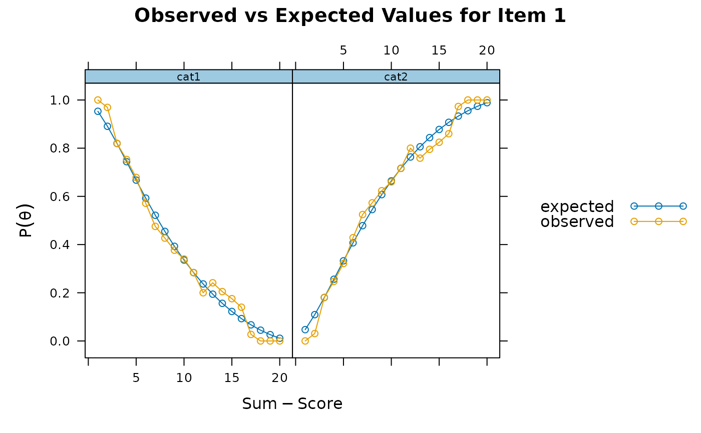
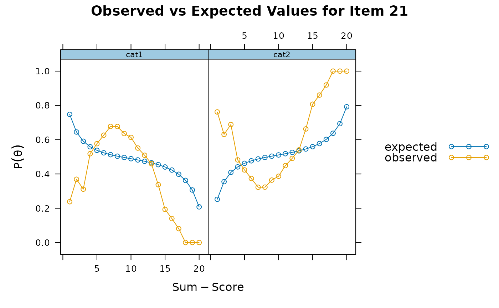
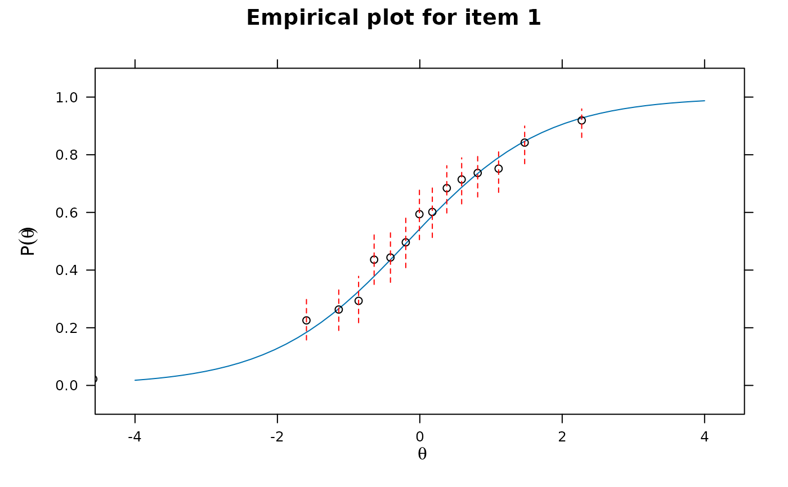
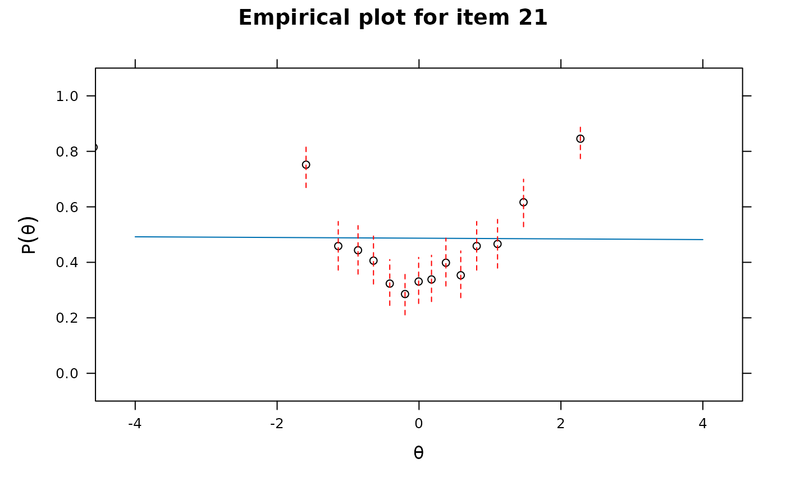
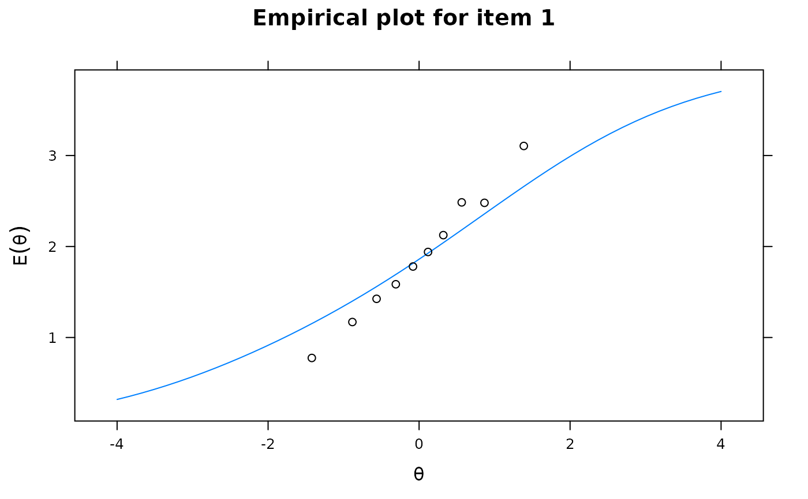
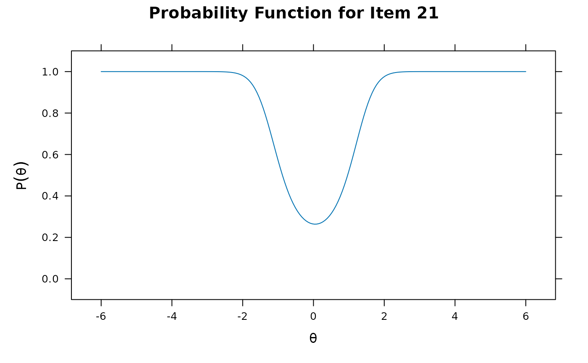

Computes item-fit statistics for a variety of unidimensional and multidimensional models.
Poorly fitting items should be inspected with the empirical plots/tables
for unidimensional models, otherwise itemGAM can be used to diagnose
where the functional form of the IRT model was misspecified, or models can be refit using
more flexible semi-parametric response models (e.g., itemtype = 'spline').
If the latent trait density was approximated (e.g., Davidian curves, Empirical histograms, etc)
then passing use_dentype_estimate = TRUE will use the internally saved quadrature and
density components (where applicable). Currently, only S-X2 statistic supported for
mixture IRT models. Finally, where applicable the root mean-square error of approximation (RMSEA)
is reported to help gauge the magnitude of item misfit.
itemfit( x, fit_stats = "S_X2", which.items = 1:extract.mirt(x, "nitems"), na.rm = FALSE, group.bins = 10, group.size = NA, group.fun = mean, mincell = 1, mincell.X2 = 2, S_X2.tables = FALSE, pv_draws = 30, boot = 1000, boot_dfapprox = 200, ETrange = c(-2, 2), ETpoints = 11, empirical.plot = NULL, empirical.CI = 0.95, empirical.table = NULL, empirical.poly.collapse = FALSE, method = "EAP", Theta = NULL, par.strip.text = list(cex = 0.7), par.settings = list(strip.background = list(col = "#9ECAE1"), strip.border = list(col = "black")), ... )
Arguments
| x | a computed model object of class |
|---|---|
| fit_stats | a character vector indicating which fit statistics should be computed. Supported inputs are:
Note that 'infit', 'S_X2', and 'Zh' cannot be computed when there are missing response data (i.e., will require multiple-imputation/row-removal techniques). |
| which.items | an integer vector indicating which items to test for fit. Default tests all possible items |
| na.rm | logical; remove rows with any missing values? This is required for methods such
as S-X2 because they require the "EAPsum" method from |
| group.bins | the number of bins to use for X2 and G2. For example,
setting |
| group.size | approximate size of each group to be used in calculating the \(\chi^2\)
statistic. The default |
| group.fun | function used when |
| mincell | the minimum expected cell size to be used in the S-X2 computations. Tables will be collapsed across items first if polytomous, and then across scores if necessary |
| mincell.X2 | the minimum expected cell size to be used in the X2 computations. Tables will be collapsed if polytomous, however if this condition can not be met then the group block will be omitted in the computations |
| S_X2.tables | logical; return the tables in a list format used to compute the S-X2 stats? |
| pv_draws | number of plausible-value draws to obtain for PV_Q1 and PV_Q1* |
| boot | number of parametric bootstrap samples to create for PV_Q1* and X2* |
| boot_dfapprox | number of parametric bootstrap samples to create for the X2*_df statistic to approximate the scaling factor for X2* as well as the scaled degrees of freedom estimates |
| ETrange | rangone of integration nodes for Stone's X2* statistic |
| ETpoints | number of integration nodes to use for Stone's X2* statistic |
| empirical.plot | a single numeric value or character of the item name indicating which
item to plot (via |
| empirical.CI | a numeric value indicating the width of the empirical confidence interval
ranging between 0 and 1 (default of 0 plots not interval). For example, a 95
interval would be plotted when |
| empirical.table | a single numeric value or character of the item name indicating which
item table of expected values should be returned. Useful for visualizing the
expected bins based on the |
| empirical.poly.collapse | logical; collapse polytomous item categories to for expected scoring
functions for empirical plots? Default is |
| method | type of factor score estimation method. See |
| Theta | a matrix of factor scores for each person used for statistics that require
empirical estimates. If supplied, arguments typically passed to |
| par.strip.text | plotting argument passed to |
| par.settings | plotting argument passed to |
| ... | additional arguments to be passed to |
References
Bock, R. D. (1972). Estimating item parameters and latent ability when responses are scored in two or more nominal categories. Psychometrika, 37, 29-51.
Chalmers, R., P. (2012). mirt: A Multidimensional Item Response Theory Package for the R Environment. Journal of Statistical Software, 48(6), 1-29. doi: 10.18637/jss.v048.i06
Chalmers, R. P. & Ng, V. (2017). Plausible-Value Imputation Statistics for Detecting Item Misfit. Applied Psychological Measurement, 41, 372-387. doi: 10.1177/0146621617692079
Drasgow, F., Levine, M. V., & Williams, E. A. (1985). Appropriateness measurement with polychotomous item response models and standardized indices. British Journal of Mathematical and Statistical Psychology, 38, 67-86.
Kang, T. & Chen, Troy, T. (2007). An investigation of the performance of the generalized S-X2 item-fit index for polytomous IRT models. ACT
McKinley, R., & Mills, C. (1985). A comparison of several goodness-of-fit statistics. Applied Psychological Measurement, 9, 49-57.
Orlando, M. & Thissen, D. (2000). Likelihood-based item fit indices for dichotomous item response theory models. Applied Psychological Measurement, 24, 50-64.
Reise, S. P. (1990). A comparison of item- and person-fit methods of assessing model-data fit in IRT. Applied Psychological Measurement, 14, 127-137.
Stone, C. A. (2000). Monte Carlo Based Null Distribution for an Alternative Goodness-of-Fit Test Statistics in IRT Models. Journal of Educational Measurement, 37, 58-75.
Wright B. D. & Masters, G. N. (1982). Rating scale analysis. MESA Press.
Yen, W. M. (1981). Using simulation results to choose a latent trait model. Applied Psychological Measurement, 5, 245-262.
See also
Author
Phil Chalmers rphilip.chalmers@gmail.com
Examples
# \donttest{ P <- function(Theta){exp(Theta^2 * 1.2 - 1) / (1 + exp(Theta^2 * 1.2 - 1))} #make some data set.seed(1234) a <- matrix(rlnorm(20, meanlog=0, sdlog = .1),ncol=1) d <- matrix(rnorm(20),ncol=1) Theta <- matrix(rnorm(2000)) items <- rep('2PL', 20) ps <- P(Theta) baditem <- numeric(2000) for(i in 1:2000) baditem[i] <- sample(c(0,1), 1, prob = c(1-ps[i], ps[i])) data <- cbind(simdata(a,d, 2000, items, Theta=Theta), baditem=baditem) x <- mirt(data, 1) raschfit <- mirt(data, 1, itemtype='Rasch') fit <- itemfit(x) fit#> item S_X2 df.S_X2 RMSEA.S_X2 p.S_X2 #> 1 Item_1 16.519 15 0.007 0.348 #> 2 Item_2 11.718 15 0.000 0.700 #> 3 Item_3 22.835 15 0.016 0.088 #> 4 Item_4 11.703 16 0.000 0.764 #> 5 Item_5 15.241 15 0.003 0.434 #> 6 Item_6 11.983 16 0.000 0.745 #> 7 Item_7 23.912 16 0.016 0.091 #> 8 Item_8 12.744 15 0.000 0.622 #> 9 Item_9 16.931 15 0.008 0.323 #> 10 Item_10 9.199 16 0.000 0.905 #> 11 Item_11 17.630 15 0.009 0.283 #> 12 Item_12 12.198 15 0.000 0.664 #> 13 Item_13 17.487 15 0.009 0.291 #> 14 Item_14 19.117 15 0.012 0.208 #> 15 Item_15 11.542 16 0.000 0.775 #> 16 Item_16 12.534 16 0.000 0.706 #> 17 Item_17 29.453 15 0.022 0.014 #> 18 Item_18 15.064 16 0.000 0.520 #> 19 Item_19 17.125 15 0.008 0.311 #> 20 Item_20 10.064 15 0.000 0.816 #> 21 baditem 233.224 18 0.077 0.000itemfit(x)#> item S_X2 df.S_X2 RMSEA.S_X2 p.S_X2 #> 1 Item_1 16.519 15 0.007 0.348 #> 2 Item_2 11.718 15 0.000 0.700 #> 3 Item_3 22.835 15 0.016 0.088 #> 4 Item_4 11.703 16 0.000 0.764 #> 5 Item_5 15.241 15 0.003 0.434 #> 6 Item_6 11.983 16 0.000 0.745 #> 7 Item_7 23.912 16 0.016 0.091 #> 8 Item_8 12.744 15 0.000 0.622 #> 9 Item_9 16.931 15 0.008 0.323 #> 10 Item_10 9.199 16 0.000 0.905 #> 11 Item_11 17.630 15 0.009 0.283 #> 12 Item_12 12.198 15 0.000 0.664 #> 13 Item_13 17.487 15 0.009 0.291 #> 14 Item_14 19.117 15 0.012 0.208 #> 15 Item_15 11.542 16 0.000 0.775 #> 16 Item_16 12.534 16 0.000 0.706 #> 17 Item_17 29.453 15 0.022 0.014 #> 18 Item_18 15.064 16 0.000 0.520 #> 19 Item_19 17.125 15 0.008 0.311 #> 20 Item_20 10.064 15 0.000 0.816 #> 21 baditem 233.224 18 0.077 0.000itemfit(x, 'X2') # just X2#> item X2 df.X2 RMSEA.X2 p.X2 #> 1 Item_1 30.842 8 0.038 0.000 #> 2 Item_2 27.970 8 0.035 0.000 #> 3 Item_3 43.995 8 0.047 0.000 #> 4 Item_4 33.272 8 0.040 0.000 #> 5 Item_5 29.469 8 0.037 0.000 #> 6 Item_6 21.325 8 0.029 0.006 #> 7 Item_7 23.127 8 0.031 0.003 #> 8 Item_8 25.332 8 0.033 0.001 #> 9 Item_9 33.778 8 0.040 0.000 #> 10 Item_10 22.972 8 0.031 0.003 #> 11 Item_11 27.300 8 0.035 0.001 #> 12 Item_12 23.256 8 0.031 0.003 #> 13 Item_13 31.523 8 0.038 0.000 #> 14 Item_14 27.924 8 0.035 0.000 #> 15 Item_15 18.462 8 0.026 0.018 #> 16 Item_16 25.057 8 0.033 0.002 #> 17 Item_17 14.828 8 0.021 0.063 #> 18 Item_18 17.676 8 0.025 0.024 #> 19 Item_19 32.585 8 0.039 0.000 #> 20 Item_20 37.207 8 0.043 0.000 #> 21 baditem 228.367 8 0.117 0.000itemfit(x, 'X2', method = 'ML') # X2 with maximum-likelihood estimates for traits#> Warning: The following factor score estimates failed to converge successfully: #> 311,315,352,518,677,748,909,927,1081,1243,1277,1305,1415,1480,1620,1893#> item X2 df.X2 RMSEA.X2 p.X2 #> 1 Item_1 35.941 8 0.042 0.000 #> 2 Item_2 53.226 8 0.053 0.000 #> 3 Item_3 14.017 7 0.022 0.051 #> 4 Item_4 85.852 8 0.070 0.000 #> 5 Item_5 85.280 8 0.070 0.000 #> 6 Item_6 4.084 7 0.000 0.770 #> 7 Item_7 57.623 8 0.056 0.000 #> 8 Item_8 7.197 7 0.004 0.409 #> 9 Item_9 55.180 8 0.054 0.000 #> 10 Item_10 32.456 8 0.039 0.000 #> 11 Item_11 131.613 8 0.088 0.000 #> 12 Item_12 50.094 8 0.051 0.000 #> 13 Item_13 55.846 8 0.055 0.000 #> 14 Item_14 18.717 8 0.026 0.016 #> 15 Item_15 6.325 7 0.000 0.502 #> 16 Item_16 38.229 8 0.043 0.000 #> 17 Item_17 4.351 7 0.000 0.739 #> 18 Item_18 3.994 7 0.000 0.780 #> 19 Item_19 14.190 8 0.020 0.077 #> 20 Item_20 7.493 7 0.006 0.379 #> 21 baditem 227.191 8 0.117 0.000#> item X2 df.X2 RMSEA.X2 p.X2 S_X2 df.S_X2 RMSEA.S_X2 p.S_X2 #> 1 Item_1 30.842 8 0.038 0.000 16.519 15 0.007 0.348 #> 2 Item_2 27.970 8 0.035 0.000 11.718 15 0.000 0.700 #> 3 Item_3 43.995 8 0.047 0.000 22.835 15 0.016 0.088 #> 4 Item_4 33.272 8 0.040 0.000 11.703 16 0.000 0.764 #> 5 Item_5 29.469 8 0.037 0.000 15.241 15 0.003 0.434 #> 6 Item_6 21.325 8 0.029 0.006 11.983 16 0.000 0.745 #> 7 Item_7 23.127 8 0.031 0.003 23.912 16 0.016 0.091 #> 8 Item_8 25.332 8 0.033 0.001 12.744 15 0.000 0.622 #> 9 Item_9 33.778 8 0.040 0.000 16.931 15 0.008 0.323 #> 10 Item_10 22.972 8 0.031 0.003 9.199 16 0.000 0.905 #> 11 Item_11 27.300 8 0.035 0.001 17.630 15 0.009 0.283 #> 12 Item_12 23.256 8 0.031 0.003 12.198 15 0.000 0.664 #> 13 Item_13 31.523 8 0.038 0.000 17.487 15 0.009 0.291 #> 14 Item_14 27.924 8 0.035 0.000 19.117 15 0.012 0.208 #> 15 Item_15 18.462 8 0.026 0.018 11.542 16 0.000 0.775 #> 16 Item_16 25.057 8 0.033 0.002 12.534 16 0.000 0.706 #> 17 Item_17 14.828 8 0.021 0.063 29.453 15 0.022 0.014 #> 18 Item_18 17.676 8 0.025 0.024 15.064 16 0.000 0.520 #> 19 Item_19 32.585 8 0.039 0.000 17.125 15 0.008 0.311 #> 20 Item_20 37.207 8 0.043 0.000 10.064 15 0.000 0.816 #> 21 baditem 228.367 8 0.117 0.000 233.224 18 0.077 0.000itemfit(x, group.bins=15, empirical.plot = 1, method = 'ML') #empirical item plot with 15 points#> Warning: The following factor score estimates failed to converge successfully: #> 311,315,352,518,677,748,909,927,1081,1243,1277,1305,1415,1480,1620,1893itemfit(x, group.bins=15, empirical.plot = 21, method = 'ML')#> Warning: The following factor score estimates failed to converge successfully: #> 311,315,352,518,677,748,909,927,1081,1243,1277,1305,1415,1480,1620,1893# PV and X2* statistics (parametric bootstrap stats not run to save time) itemfit(x, 'PV_Q1')#> item PV_Q1 df.PV_Q1 RMSEA.PV_Q1 p.PV_Q1 #> 1 Item_1 7.958 8 0.000 0.438 #> 2 Item_2 8.604 8 0.006 0.377 #> 3 Item_3 7.410 8 0.000 0.493 #> 4 Item_4 7.243 8 0.000 0.511 #> 5 Item_5 8.602 8 0.006 0.377 #> 6 Item_6 9.415 8 0.009 0.309 #> 7 Item_7 8.565 8 0.006 0.380 #> 8 Item_8 10.259 8 0.012 0.247 #> 9 Item_9 10.556 8 0.013 0.228 #> 10 Item_10 9.051 8 0.008 0.338 #> 11 Item_11 9.017 8 0.008 0.341 #> 12 Item_12 7.520 8 0.000 0.482 #> 13 Item_13 8.663 8 0.006 0.371 #> 14 Item_14 10.018 8 0.011 0.264 #> 15 Item_15 9.011 8 0.008 0.341 #> 16 Item_16 8.226 8 0.004 0.412 #> 17 Item_17 7.659 8 0.000 0.467 #> 18 Item_18 8.250 8 0.004 0.409 #> 19 Item_19 6.956 8 0.000 0.541 #> 20 Item_20 8.122 8 0.003 0.422 #> 21 baditem 128.442 8 0.087 0.000# mirtCluster() # improve speed of bootstrap samples by running in parallel # itemfit(x, 'PV_Q1*') # itemfit(x, 'X2*') # Stone's 1993 statistic # itemfit(x, 'X2*_df') # Stone's 2000 scaled statistic with df estimate #empirical tables for X2 statistic itemfit(x, empirical.table=1)#> $`theta = -1.4531` #> Observed Expected z.Residual #> cat_0 183 158.63869 1.934176 #> cat_1 17 41.36131 -3.787943 #> #> $`theta = -0.9416` #> Observed Expected z.Residual #> cat_0 149 138.43172 0.8982277 #> cat_1 51 61.56828 -1.3468702 #> #> $`theta = -0.6475` #> Observed Expected z.Residual #> cat_0 132 124.64146 0.6591135 #> cat_1 68 75.35854 -0.8476670 #> #> $`theta = -0.3921` #> Observed Expected z.Residual #> cat_0 112 111.77447 0.02133235 #> cat_1 88 88.22553 -0.02401114 #> #> $`theta = -0.1393` #> Observed Expected z.Residual #> cat_0 88 98.63125 -1.070476 #> cat_1 112 101.36875 1.055923 #> #> $`theta = 0.0936` #> Observed Expected z.Residual #> cat_0 86 86.5533 -0.05947283 #> cat_1 114 113.4467 0.05194748 #> #> $`theta = 0.346` #> Observed Expected z.Residual #> cat_0 61 73.91477 -1.502177 #> cat_1 139 126.08523 1.150150 #> #> $`theta = 0.6087` #> Observed Expected z.Residual #> cat_0 54 61.64828 -0.9740998 #> cat_1 146 138.35172 0.6502370 #> #> $`theta = 0.9646` #> Observed Expected z.Residual #> cat_0 41 47.0127 -0.8769235 #> cat_1 159 152.9873 0.4861179 #> #> $`theta = 1.5621` #> Observed Expected z.Residual #> cat_0 24 28.27768 -0.8044264 #> cat_1 176 171.72232 0.3264336 #>itemfit(x, empirical.table=21)#> $`theta = -1.4531` #> Observed Expected z.Residual #> cat_0 38 102.2339 -6.352824 #> cat_1 162 97.7661 6.496361 #> #> $`theta = -0.9416` #> Observed Expected z.Residual #> cat_0 91 102.36277 -1.123087 #> cat_1 109 97.63723 1.149944 #> #> $`theta = -0.6475` #> Observed Expected z.Residual #> cat_0 114 102.43686 1.142477 #> cat_1 86 97.56314 -1.170665 #> #> $`theta = -0.3921` #> Observed Expected z.Residual #> cat_0 130 102.50119 2.716123 #> cat_1 70 97.49881 -2.784930 #> #> $`theta = -0.1393` #> Observed Expected z.Residual #> cat_0 142 102.56488 3.893891 #> cat_1 58 97.43512 -3.995079 #> #> $`theta = 0.0936` #> Observed Expected z.Residual #> cat_0 130 102.62356 2.702424 #> cat_1 70 97.37644 -2.774279 #> #> $`theta = 0.346` #> Observed Expected z.Residual #> cat_0 120 102.68712 1.708485 #> cat_1 80 97.31288 -1.755028 #> #> $`theta = 0.6087` #> Observed Expected z.Residual #> cat_0 119 102.7533 1.602755 #> cat_1 81 97.2467 -1.647508 #> #> $`theta = 0.9646` #> Observed Expected z.Residual #> cat_0 97 102.84295 -0.5761622 #> cat_1 103 97.15705 0.5927818 #> #> $`theta = 1.5621` #> Observed Expected z.Residual #> cat_0 45 102.99345 -5.714446 #> cat_1 155 97.00655 5.888143 #>#infit/outfit statistics. method='ML' agrees better with eRm package itemfit(raschfit, 'infit', method = 'ML') #infit and outfit stats#> item outfit z.outfit infit z.infit #> 1 Item_1 0.919 -2.945 0.951 -2.699 #> 2 Item_2 0.962 -1.281 0.960 -2.010 #> 3 Item_3 0.876 -4.455 0.918 -4.332 #> 4 Item_4 0.998 -0.049 1.009 0.495 #> 5 Item_5 0.982 -0.523 0.974 -1.227 #> 6 Item_6 0.890 -2.233 0.950 -1.692 #> 7 Item_7 1.008 0.259 1.003 0.171 #> 8 Item_8 0.933 -1.743 0.961 -1.631 #> 9 Item_9 0.958 -1.519 0.964 -1.999 #> 10 Item_10 1.011 0.303 1.013 0.534 #> 11 Item_11 0.898 -2.300 0.939 -2.531 #> 12 Item_12 0.988 -0.383 1.012 0.607 #> 13 Item_13 0.991 -0.263 1.002 0.093 #> 14 Item_14 0.973 -0.841 0.974 -1.256 #> 15 Item_15 0.947 -0.943 0.993 -0.210 #> 16 Item_16 0.988 -0.271 0.985 -0.546 #> 17 Item_17 0.878 -1.532 0.960 -0.872 #> 18 Item_18 0.961 -0.759 0.978 -0.742 #> 19 Item_19 0.943 -2.060 0.974 -1.352 #> 20 Item_20 0.868 -4.736 0.911 -4.687 #> 21 baditem 1.513 16.123 1.338 16.509#same as above, but inputting ML estimates instead (saves time for re-use) Theta <- fscores(raschfit, method = 'ML') itemfit(raschfit, 'infit', Theta=Theta)#> item outfit z.outfit infit z.infit #> 1 Item_1 0.919 -2.945 0.951 -2.699 #> 2 Item_2 0.962 -1.281 0.960 -2.010 #> 3 Item_3 0.876 -4.455 0.918 -4.332 #> 4 Item_4 0.998 -0.049 1.009 0.495 #> 5 Item_5 0.982 -0.523 0.974 -1.227 #> 6 Item_6 0.890 -2.233 0.950 -1.692 #> 7 Item_7 1.008 0.259 1.003 0.171 #> 8 Item_8 0.933 -1.743 0.961 -1.631 #> 9 Item_9 0.958 -1.519 0.964 -1.999 #> 10 Item_10 1.011 0.303 1.013 0.534 #> 11 Item_11 0.898 -2.300 0.939 -2.531 #> 12 Item_12 0.988 -0.383 1.012 0.607 #> 13 Item_13 0.991 -0.263 1.002 0.093 #> 14 Item_14 0.973 -0.841 0.974 -1.256 #> 15 Item_15 0.947 -0.943 0.993 -0.210 #> 16 Item_16 0.988 -0.271 0.985 -0.546 #> 17 Item_17 0.878 -1.532 0.960 -0.872 #> 18 Item_18 0.961 -0.759 0.978 -0.742 #> 19 Item_19 0.943 -2.060 0.974 -1.352 #> 20 Item_20 0.868 -4.736 0.911 -4.687 #> 21 baditem 1.513 16.123 1.338 16.509itemfit(raschfit, empirical.plot=1, Theta=Theta)itemfit(raschfit, empirical.table=1, Theta=Theta)#> $`theta = -1.7718` #> Observed Expected z.Residual #> cat_0 176 166.44926 0.7402803 #> cat_1 24 33.55074 -1.6488687 #> #> $`theta = -1.0782` #> Observed Expected z.Residual #> cat_0 151 142.51602 0.7106697 #> cat_1 49 57.48398 -1.1189900 #> #> $`theta = -0.7497` #> Observed Expected z.Residual #> cat_0 133 128.19072 0.4247680 #> cat_1 67 71.80928 -0.5675312 #> #> $`theta = -0.4577` #> Observed Expected z.Residual #> cat_0 115 114.2782 0.06752015 #> cat_1 85 85.7218 -0.07795957 #> #> $`theta = -0.193` #> Observed Expected z.Residual #> cat_0 89 101.13957 -1.207099 #> cat_1 111 98.86043 1.220934 #> #> $`theta = 0.0765` #> Observed Expected z.Residual #> cat_0 70 87.7275 -1.892691 #> cat_1 130 112.2725 1.673057 #> #> $`theta = 0.3374` #> Observed Expected z.Residual #> cat_0 77 75.15333 0.2130175 #> cat_1 123 124.84667 -0.1652726 #> #> $`theta = 0.6728` #> Observed Expected z.Residual #> cat_0 53 60.18187 -0.9257732 #> cat_1 147 139.81813 0.6073733 #> #> $`theta = 1.0787` #> Observed Expected z.Residual #> cat_0 45 44.57924 0.06301925 #> cat_1 155 155.42076 -0.03375088 #> #> $`theta = 1.9249` #> Observed Expected z.Residual #> cat_0 21 21.91506 -0.19546933 #> cat_1 179 178.08494 0.06857035 #># fit a new more flexible model for the mis-fitting item itemtype <- c(rep('2PL', 20), 'spline') x2 <- mirt(data, 1, itemtype=itemtype)#>itemfit(x2)#> item S_X2 df.S_X2 RMSEA.S_X2 p.S_X2 #> 1 Item_1 13.109 15 0.000 0.594 #> 2 Item_2 13.513 15 0.000 0.563 #> 3 Item_3 21.887 15 0.015 0.111 #> 4 Item_4 9.894 15 0.000 0.826 #> 5 Item_5 16.248 15 0.006 0.366 #> 6 Item_6 10.218 16 0.000 0.855 #> 7 Item_7 18.279 15 0.010 0.248 #> 8 Item_8 13.587 16 0.000 0.629 #> 9 Item_9 13.485 15 0.000 0.565 #> 10 Item_10 10.569 16 0.000 0.835 #> 11 Item_11 16.325 15 0.007 0.361 #> 12 Item_12 9.663 15 0.000 0.840 #> 13 Item_13 19.394 16 0.010 0.249 #> 14 Item_14 16.357 15 0.007 0.359 #> 15 Item_15 9.410 16 0.000 0.896 #> 16 Item_16 13.578 16 0.000 0.630 #> 17 Item_17 29.945 16 0.021 0.018 #> 18 Item_18 15.058 16 0.000 0.520 #> 19 Item_19 15.663 15 0.005 0.405 #> 20 Item_20 9.333 15 0.000 0.859 #> 21 baditem 11.473 13 0.000 0.571#> #> Model 1: mirt(data = data, model = 1) #> Model 2: mirt(data = data, model = 1, itemtype = itemtype) #>#> AIC AICc SABIC HQ BIC logLik X2 df p #> 1 49477.85 49479.7 49579.65 49564.23 49713.09 -24696.93 NaN NaN NaN #> 2 49214.97 49217.0 49321.62 49305.46 49461.41 -24563.49 266.88 2 0#------------------------------------------------------------ #similar example to Kang and Chen 2007 a <- matrix(c(.8,.4,.7, .8, .4, .7, 1, 1, 1, 1)) d <- matrix(rep(c(2.0,0.0,-1,-1.5),10), ncol=4, byrow=TRUE) dat <- simdata(a,d,2000, itemtype = rep('graded', 10)) head(dat)#> Item_1 Item_2 Item_3 Item_4 Item_5 Item_6 Item_7 Item_8 Item_9 Item_10 #> [1,] 0 3 0 2 1 0 0 0 4 0 #> [2,] 2 0 4 2 1 1 3 3 2 3 #> [3,] 2 2 0 3 0 2 2 3 2 1 #> [4,] 2 1 3 1 0 4 4 1 2 1 #> [5,] 1 2 3 4 1 0 1 1 0 1 #> [6,] 2 2 2 2 1 2 4 1 4 2#> item S_X2 df.S_X2 RMSEA.S_X2 p.S_X2 #> 1 Item_1 93.899 99 0.000 0.626 #> 2 Item_2 124.960 107 0.009 0.113 #> 3 Item_3 94.334 103 0.000 0.717 #> 4 Item_4 99.476 100 0.000 0.496 #> 5 Item_5 95.050 107 0.000 0.789 #> 6 Item_6 104.562 103 0.003 0.439 #> 7 Item_7 96.436 98 0.000 0.526 #> 8 Item_8 82.266 95 0.000 0.821 #> 9 Item_9 92.077 95 0.000 0.566 #> 10 Item_10 115.494 96 0.010 0.086itemfit(mod, 'X2') #pretty much useless given inflated Type I error rates#> item X2 df.X2 RMSEA.X2 p.X2 #> 1 Item_1 100.685 35 0.031 0.000 #> 2 Item_2 44.310 35 0.012 0.135 #> 3 Item_3 75.078 35 0.024 0.000 #> 4 Item_4 100.085 35 0.031 0.000 #> 5 Item_5 43.830 35 0.011 0.145 #> 6 Item_6 80.692 35 0.026 0.000 #> 7 Item_7 127.791 35 0.036 0.000 #> 8 Item_8 156.723 35 0.042 0.000 #> 9 Item_9 155.003 35 0.041 0.000 #> 10 Item_10 141.590 35 0.039 0.000itemfit(mod, empirical.plot = 1)itemfit(mod, empirical.plot = 1, empirical.poly.collapse=TRUE)# collapsed tables (see mincell.X2) for X2 and G2 itemfit(mod, empirical.table = 1)#> $`theta = -1.4209` #> Observed Expected z.Residual #> cat_0 85 55.318942 3.9906389 #> cat_1 86 94.701446 -0.8941556 #> cat_2 23 28.143472 -0.9695441 #> cat_3 1 7.827705 -2.4403805 #> cat_4 5 14.008434 -2.4068804 #> #> $`theta = -0.8835` #> Observed Expected z.Residual #> cat_0 44 39.95035 0.6407034 #> cat_1 104 92.47230 1.1987731 #> cat_2 34 35.96463 -0.3276000 #> cat_3 10 10.92542 -0.2799763 #> cat_4 8 20.68730 -2.7894411 #> #> $`theta = -0.563` #> Observed Expected z.Residual #> cat_0 39 32.43609 1.1525205 #> cat_1 94 88.18776 0.6189264 #> cat_2 30 40.39554 -1.6356118 #> cat_3 17 13.08011 1.0838460 #> cat_4 20 25.90050 -1.1594035 #> #> $`theta = -0.3083` #> Observed Expected z.Residual #> cat_0 35 27.31090 1.4713222 #> cat_1 79 83.46536 -0.4887684 #> cat_2 46 43.50774 0.3778421 #> cat_3 14 14.90778 -0.2351110 #> cat_4 26 30.80823 -0.8662673 #> #> $`theta = -0.0807` #> Observed Expected z.Residual #> cat_0 17 23.32415 -1.3094810 #> cat_1 90 78.46291 1.3024593 #> cat_2 43 45.81785 -0.4162944 #> cat_3 20 16.58020 0.8398582 #> cat_4 30 35.81489 -0.9716503 #> #> $`theta = 0.1187` #> Observed Expected z.Residual #> cat_0 18 20.25693 -0.501454266 #> cat_1 72 73.62776 -0.189700444 #> cat_2 53 47.37701 0.816926990 #> cat_3 18 18.03394 -0.007992367 #> cat_4 39 40.70436 -0.267141305 #> #> $`theta = 0.321` #> Observed Expected z.Residual #> cat_0 11 17.51585 -1.5568808 #> cat_1 74 68.42858 0.6735147 #> cat_2 47 48.44462 -0.2075543 #> cat_3 15 19.45455 -1.0099339 #> cat_4 53 46.15640 1.0073225 #> #> $`theta = 0.5646` #> Observed Expected z.Residual #> cat_0 6 14.66259 -2.2622598 #> cat_1 47 61.96236 -1.9007986 #> cat_2 58 48.97640 1.2893969 #> cat_3 22 21.02536 0.2125546 #> cat_4 67 53.37329 1.8652157 #> #> $`theta = 0.8662` #> Observed Expected z.Residual #> cat_0 8 11.72523 -1.08790886 #> cat_1 53 53.94787 -0.12905058 #> cat_2 45 48.45154 -0.49586039 #> cat_3 23 22.63571 0.07656825 #> cat_4 71 63.23965 0.97585804 #> #> $`theta = 1.3871` #> Observed Expected z.Residual #> cat_0 3 7.913029 -1.7465378 #> cat_1 21 40.961089 -3.1188787 #> cat_2 39 44.690593 -0.8512350 #> cat_3 26 24.147525 0.3769781 #> cat_4 111 82.287764 3.1651871 #>#> item outfit z.outfit infit z.infit #> 1 Item_1 0.914 -3.079 0.925 -3.064 #> 2 Item_2 1.122 4.064 1.093 3.525 #> 3 Item_3 0.991 -0.323 0.979 -0.827 #> 4 Item_4 0.943 -2.020 0.941 -2.409 #> 5 Item_5 1.073 2.460 1.056 2.112 #> 6 Item_6 0.969 -1.097 0.965 -1.380 #> 7 Item_7 0.881 -4.352 0.894 -4.412 #> 8 Item_8 0.842 -5.779 0.864 -5.737 #> 9 Item_9 0.867 -4.893 0.869 -5.519 #> 10 Item_10 0.867 -4.825 0.886 -4.710#massive list of tables for S-X2 tables <- itemfit(mod, S_X2.tables = TRUE) #observed and expected total score patterns for item 1 (post collapsing) tables$O[[1]]#> 0 1 2 3 4 #> 4 3 3 0 0 0 #> 5 4 7 0 0 0 #> 6 15 3 2 0 0 #> 7 10 18 5 0 0 #> 8 14 11 3 0 0 #> 9 14 32 5 1 1 #> 10 18 34 11 2 2 #> 11 22 28 15 3 3 #> 12 24 40 13 1 2 #> 13 18 39 17 9 2 #> 14 19 44 18 3 13 #> 15 18 51 23 13 9 #> 16 16 48 30 8 10 #> 17 13 52 23 12 23 #> 18 8 44 24 13 20 #> 19 8 44 25 10 23 #> 20 16 43 28 11 19 #> 21 7 29 30 8 32 #> 22 2 36 30 7 33 #> 23 6 22 15 10 33 #> 24 3 27 23 7 30 #> 25 3 18 14 7 21 #> 26 3 15 9 10 24 #> 27 0 8 13 8 17 #> 28 1 8 16 5 30 #> 29 9 11 4 25 0 #> 30 5 7 3 15 0 #> 31 2 5 4 11 0 #> 32 2 2 1 10 0 #> 33 0 1 11 0 0 #> 34 1 3 0 0 0 #> 35 4 8 0 0 0tables$E[[1]]#> [,1] [,2] [,3] [,4] [,5] #> [1,] 3.918319 2.081681 NA NA NA #> [2,] 6.149385 4.850615 NA NA NA #> [3,] 9.790108 8.811645 1.398247 NA NA #> [4,] 14.166358 15.598449 3.235193 NA NA #> [5,] 10.565592 13.809121 3.625286 NA NA #> [6,] 17.619194 26.724159 6.379443 1.145497 1.131706 #> [7,] 19.653375 34.024048 9.338550 1.878077 2.105950 #> [8,] 18.391936 35.887947 11.163374 2.473284 3.083458 #> [9,] 18.311048 39.853726 13.905549 3.354018 4.575659 #> [10,] 17.200670 41.378213 16.061883 4.183872 6.175362 #> [11,] 17.357395 45.806904 19.639643 5.491783 8.704275 #> [12,] 18.030005 51.892302 24.430514 7.295867 12.351312 #> [13,] 15.644437 48.847779 25.142954 7.986595 14.378236 #> [14,] 15.162220 51.104822 28.653260 9.655383 18.424314 #> [15,] 11.841855 42.914514 26.115721 9.317322 18.810588 #> [16,] 10.509753 40.826502 26.891436 10.138380 21.633929 #> [17,] 9.808086 40.713579 28.971704 11.527946 25.978686 #> [18,] 7.775829 34.393940 26.389101 11.078289 26.362841 #> [19,] 6.905168 32.497640 26.834662 11.880618 29.881911 #> [20,] 4.769487 23.851027 21.182620 9.886852 26.310014 #> [21,] 4.308005 22.849919 21.816342 10.743154 30.282581 #> [22,] 2.584337 14.542330 14.910553 7.754323 23.208457 #> [23,] 2.124578 12.697321 13.991945 7.687538 24.498618 #> [24,] 1.348138 8.548585 10.141406 5.899082 20.062788 #> [25,] 1.460285 9.857127 12.582420 7.772226 28.327941 #> [26,] 7.996846 9.684061 6.357311 24.961781 NA #> [27,] 4.164540 5.525401 3.873754 16.436305 NA #> [28,] 2.556865 3.709920 2.799879 12.933336 NA #> [29,] 1.420711 2.289320 1.856324 9.433645 NA #> [30,] 2.516859 1.438434 8.044707 NA NA #> [31,] 1.144051 2.855949 NA NA NA #> [32,] 2.567132 9.432868 NA NA NA# fit stats with missing data (run in parallel using all cores) dat[sample(1:prod(dim(dat)), 100)] <- NA raschfit <- mirt(dat, 1, itemtype='Rasch') #use only valid data by removing rows with missing terms itemfit(raschfit, c('S_X2', 'infit'), na.rm = TRUE)#>#> item outfit z.outfit infit z.infit S_X2 df.S_X2 RMSEA.S_X2 p.S_X2 #> 1 Item_1 0.886 -4.565 0.898 -4.330 100.645 99 0.003 0.435 #> 2 Item_2 1.001 0.064 1.004 0.152 194.385 100 0.022 0.000 #> 3 Item_3 0.929 -2.726 0.935 -2.668 109.760 100 0.007 0.237 #> 4 Item_4 0.909 -3.640 0.915 -3.612 104.504 99 0.005 0.333 #> 5 Item_5 0.977 -0.819 0.984 -0.615 148.129 101 0.016 0.002 #> 6 Item_6 0.922 -3.052 0.930 -2.919 93.553 99 0.000 0.636 #> 7 Item_7 0.871 -5.253 0.885 -4.987 92.262 99 0.000 0.671 #> 8 Item_8 0.829 -7.063 0.846 -6.791 98.176 99 0.000 0.505 #> 9 Item_9 0.855 -5.984 0.863 -6.008 121.483 99 0.011 0.062 #> 10 Item_10 0.859 -5.632 0.874 -5.370 115.273 99 0.009 0.126# note that X2, G2, PV-Q1, and X2* do not require complete datasets thetas <- fscores(raschfit, method = 'ML') # save scores for faster computations itemfit(raschfit, c('X2', 'G2'), Theta=thetas)#> item X2 df.X2 RMSEA.X2 p.X2 G2 df.G2 RMSEA.G2 p.G2 #> 1 Item_1 41.784 36 0.009 0.234 42.488 36 0.009 0.212 #> 2 Item_2 113.533 36 0.033 0.000 95.462 36 0.029 0.000 #> 3 Item_3 25.475 36 0.000 0.904 25.439 36 0.000 0.905 #> 4 Item_4 60.797 36 0.019 0.006 62.671 36 0.019 0.004 #> 5 Item_5 68.962 36 0.021 0.001 63.532 36 0.020 0.003 #> 6 Item_6 37.420 36 0.004 0.404 37.500 36 0.005 0.400 #> 7 Item_7 48.593 36 0.013 0.078 52.796 36 0.015 0.035 #> 8 Item_8 59.178 36 0.018 0.009 68.292 34 0.022 0.000 #> 9 Item_9 65.140 36 0.020 0.002 70.612 36 0.022 0.000 #> 10 Item_10 50.656 36 0.014 0.053 57.007 35 0.018 0.011itemfit(raschfit, empirical.plot=1, Theta=thetas)itemfit(raschfit, empirical.table=1, Theta=thetas)#> $`theta = -0.9139` #> Observed Expected z.Residual #> cat_0 73 75.879690 -0.33058490 #> cat_1 96 93.320262 0.27739871 #> cat_2 23 22.388410 0.12925548 #> cat_3 3 3.361717 -0.19728219 #> cat_4 3 3.049922 -0.02858553 #> #> $`theta = -0.4776` #> Observed Expected z.Residual #> cat_0 58 49.961320 1.1372810 #> cat_1 91 95.058402 -0.4162554 #> cat_2 39 35.281254 0.6260723 #> cat_3 7 8.195738 -0.4176784 #> cat_4 5 11.503285 -1.9174403 #> #> $`theta = -0.2792` #> Observed Expected z.Residual #> cat_0 35 38.24743 -0.5250956 #> cat_1 90 88.73957 0.1338014 #> cat_2 38 40.16329 -0.3413502 #> cat_3 16 11.37711 1.3705598 #> cat_4 19 19.47261 -0.1070998 #> #> $`theta = -0.1507` #> Observed Expected z.Residual #> cat_0 26 31.34557 -0.9547865 #> cat_1 86 82.69918 0.3629699 #> cat_2 45 42.56211 0.3736827 #> cat_3 17 13.70994 0.8885583 #> cat_4 23 26.68319 -0.7130263 #> #> $`theta = -0.0419` #> Observed Expected z.Residual #> cat_0 21 26.35372 -1.0428807 #> cat_1 82 77.52098 0.5087139 #> cat_2 40 44.48294 -0.6721498 #> cat_3 23 15.97564 1.7574284 #> cat_4 33 34.66672 -0.2830788 #> #> $`theta = 0.0657` #> Observed Expected z.Residual #> cat_0 21 21.56228 -0.1210898 #> cat_1 82 70.63216 1.3526227 #> cat_2 41 45.13435 -0.6153938 #> cat_3 17 18.05104 -0.2473832 #> cat_4 38 43.62017 -0.8509528 #> #> $`theta = 0.1664` #> Observed Expected z.Residual #> cat_0 12 17.63477 -1.34181165 #> cat_1 58 63.88522 -0.73631279 #> cat_2 63 45.14688 2.65705294 #> cat_3 13 19.96851 -1.55943460 #> cat_4 54 53.36462 0.08697813 #> #> $`theta = 0.2742` #> Observed Expected z.Residual #> cat_0 10 13.78811 -1.0201637 #> cat_1 51 55.63459 -0.6213536 #> cat_2 45 43.79072 0.1827417 #> cat_3 19 21.57296 -0.5539598 #> cat_4 74 64.21363 1.2212598 #> #> $`theta = 0.4179` #> Observed Expected z.Residual #> cat_0 6 9.623228 -1.1679795 #> cat_1 54 44.830583 1.3694763 #> cat_2 42 40.740365 0.1973477 #> cat_3 27 23.172132 0.7951955 #> cat_4 69 79.633692 -1.1916141 #> #> $`theta = 0.6973` #> Observed Expected z.Residual #> cat_0 2 4.336669 -1.12206778 #> cat_1 25 26.713776 -0.33157854 #> cat_2 38 32.100453 1.04126937 #> cat_3 22 24.142242 -0.43599314 #> cat_4 110 109.706860 0.02798709 #># }